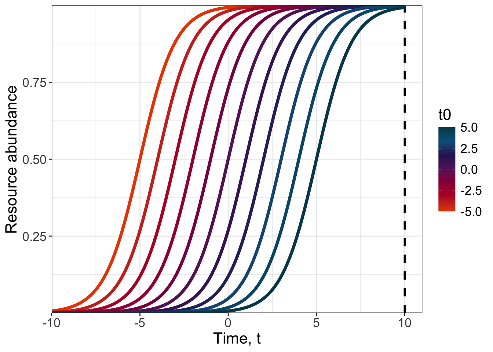
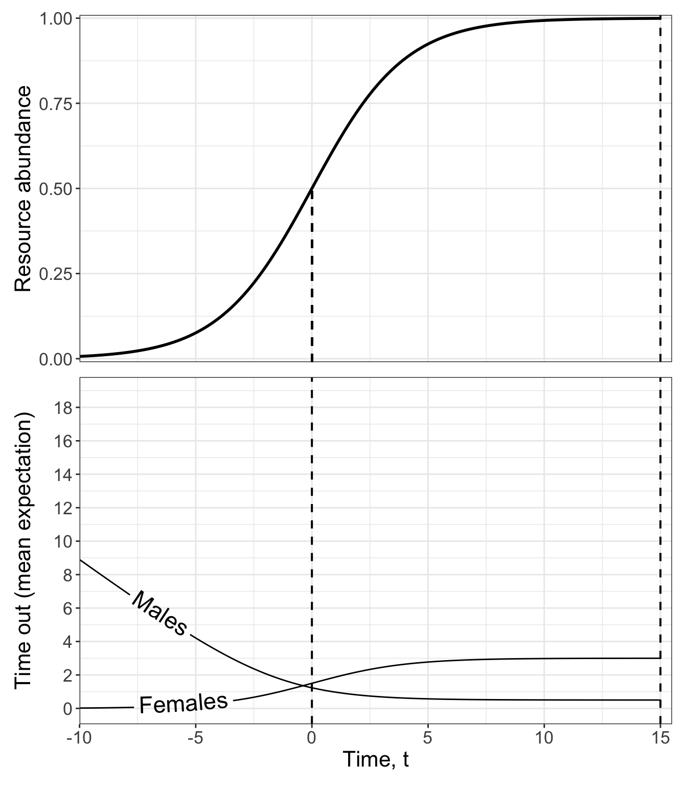
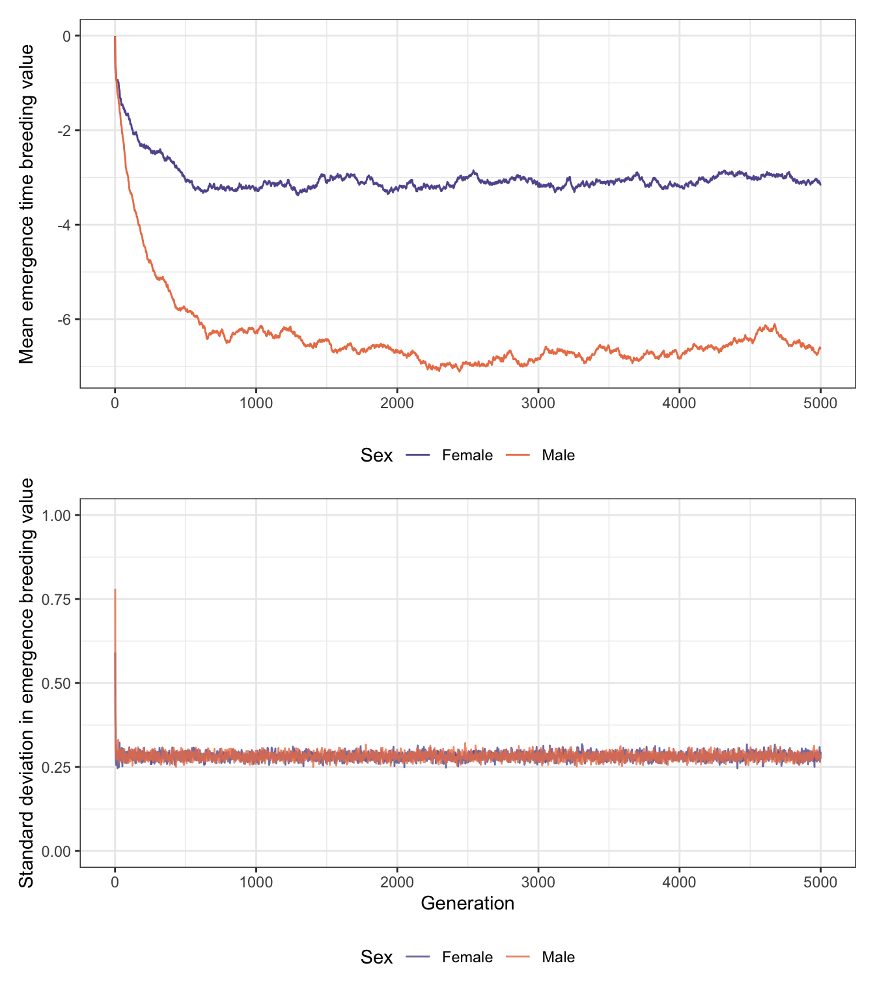
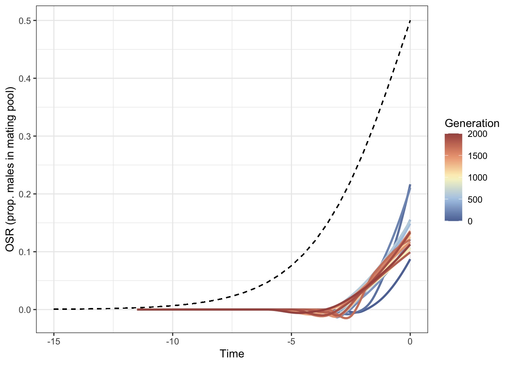
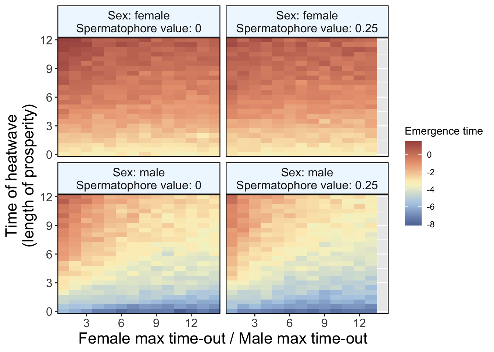

Code
library(tidyverse)
library(geomtextpath)
library(MoMAColors)
library(PNWColors)
library(bench)
library(patchwork)
library(stickylabeller)
sensible_sample <- function(x, ...){x[sample(length(x), ...)]}library(tidyverse)
library(geomtextpath)
library(MoMAColors)
library(PNWColors)
library(bench)
library(patchwork)
library(stickylabeller)
sensible_sample <- function(x, ...){x[sample(length(x), ...)]}emergence_sample <- function(emergence_breeding_value, p){
# T is the emergence breeding value
# we take advantage of the fact that the cumulative distribution of the emergence time is exp(t)/(exp(t)+exp(T)),
# hence the t that corresponds to a uniformly distributed p is ln(exp(T) p/(1-p)) = ln(exp(T))+ln(p/(1-p)) = T+ln(p/(1-p))
#p <- runif(length(emergence_breeding_value))
emergence_breeding_value+log(p/(1-p))
}How resources increase with time is described by the logistic growth function
\[R(t) = \frac{1}{1 + e^{-k(t - t_0)}}\] where \(t_0\) is the \(t\) value of the functions midpoint. The function saturates at 1, which indicates the point where female fecundity is no longer limited by resource abundance. Here’s what it looks like for different values of \(t_0\), with \(k\) = 1.
expand_grid(t = seq(from = -20, to = 20, by = 0.1),
t0 = seq(from = -5, to = 5, by = 1)) %>%
mutate(resources = 1/(1 + exp(-1*(t - t0))),
resources = case_when(t > 10 ~ NaN,
.default = resources)) %>%
ggplot(aes(x = t, y = resources)) +
geom_vline(xintercept = 10, linetype = 2, linewidth = 1) +
geom_line(aes(colour = t0, group = t0), linewidth = 1.5) +
scale_color_moma_c("Panton") +
scale_x_continuous(limits = c(-10, 11), expand = c(0, 0)) +
scale_y_continuous(expand = c(0, 0)) +
labs(x = "Time, t",
y = "Resource abundance",
colour = "t0") +
theme_bw() +
theme(text = element_text(size = 16))
Build the helper function
\(R(t)\) describes how resources flow into the system as time passes. Under the simplifying assumptions that spermatophore size is fixed across the population and that resource acquisition is independent of conspecific desnity and behaviour, the male refractory period is \(x-T\), where \(T\) is the time during the season when a male starts building a spermatophore and \(x\) is the time-point at which he has gathered sufficient resources to produce a complete spermatophore. We calculate spermatophore production between two points in the season as \[ A = \int_{T}^{x} \frac{1}{c_\mathrm{m} + e^{-k(t - t_0)}} \,dt \] where \(k\) determines the rate at which resources enter the system and \(c_\mathrm{m}\) controls how efficiently males convert these resources into spermatophore. When \(c_\mathrm{m}\) is small, spermatophore production is efficient/cheap. We set the necessary amount of resources required to complete a spermatophore to \(A = 1\) and for a given value of \(T\) find males return to the mating pool at time
\[ x = \frac{kt_0 + \mathrm{Log}[\frac{-1+e^{c_\mathrm{m}k} + c_\mathrm{m}e^{c_\mathrm{m}k + k (T-t_0)}}{c_\mathrm{m}}]}{k} \]
\(R(t)\) describes how resources flow into the system as time passes. Let the speed at which males convert available resources into spermatophore be governed by the constant \(c\), such that the male refractory period is \(r_\mathrm{m}(R) = cT_Be^{-kR}+r_0\), where \(T_B\) is the length of the breeding season (this is L in Hanna’s model), \(r_0\) is the time required to build a spermatophore at the resource peak, and \(k\) determines the rate at which the refractory decreases with an increase in resources.
Resource availability has the opposite effect on the female refractory period. We assume that females use the resources available to them immediately after mating to produce eggs, which they then spend time out of the mating pool ovipositing. Females lay eggs at a population-wide constant rate; the time spent out of the mating pool is therefore determined by the number of eggs they were able to produce immediately after mating. Longer refractory periods result from having a greater number of eggs to lay. Females also acquire resources from the spermatophore they receive during mating, which provides an additive ‘bump’ to the resources they have at their disposal. The efficiency at which females convert resources into eggs is controlled by the constant \(c_\mathrm{f}\), such that the female refractory is \(r_\mathrm{f}=c_\mathrm{f}(R(t) + s)\), where \(s\) is a population-wide constant that controls the nutritional content of the spermatophore. Any values of \(R(t) + s\) that exceed 1 are reset to 1; the value where female fecundity is no longer limited by resources.
Set \(c_\mathrm{f}\) = 3, \(c_\mathrm{m}\) = 0.5, \(s\) = 0, \(k\) = 0.5, \(t_0\) = 0 and plot
panel_1 <-
expand_grid(t = seq(from = -20, to = 20, by = 0.1),
t0 = 0,
k = 0.5) %>%
mutate(resources = 1/(1 + exp(-k*(t - t0))),
resources = case_when(t > 15 ~ NaN,
.default = resources),
end_y = 1/(1 + exp(-k*(-1 - t0)))) %>%
ggplot(aes(x = t, y = resources)) +
geom_segment(x = 0, xend=0,
y = -Inf, yend=0.5,
colour = "black", linetype = 2, linewidth = 0.7) +
geom_vline(xintercept = 15, linetype = 2, linewidth = 0.7) +
geom_line(linewidth = 1) +
scale_x_continuous(limits = c(-10, 15.5), expand = c(0, 0)) +
scale_y_continuous(expand = c(0.005, 0.005)) +
labs(x = "Time, t",
y = "Resource abundance") +
theme_bw() +
theme(text = element_text(size = 16),
legend.position = "none")
panel_2 <-
expand_grid(t = seq(from = -20, to = 20, by = 0.1),
t0 = seq(from = -10, to = 15, by = 1),
cm = 0.5,
fm = 3,
k = 0.5) %>%
mutate(male_timeout = ((k*t0 + log((-1 + exp(cm*k) + cm*exp(cm*k+k*(t-t0)))/(cm)))/k)-t,
female_timeout = (fm/(1 + exp(-k*(t - t0)))),
male_timeout = case_when(t > 15 ~ NaN,
.default = male_timeout),
female_timeout = case_when(t > 15 ~ NaN,
.default = female_timeout)) %>%
filter(t0 == 0) %>%
ggplot(aes(x = t)) +
geom_vline(xintercept = 15, linetype = 2, linewidth = 0.7) +
geom_vline(xintercept = 0, linetype = 2, linewidth = 0.7) +
geom_textline(aes(y = male_timeout, label = "Males"), size = 6, hjust = 0.12) +
geom_textline(aes(y = female_timeout, label = "Females"), size = 6, hjust = 0.12) +
scale_x_continuous(limits = c(-10, 15.5), expand = c(0, 0)) +
scale_y_continuous(expand = c(0.005, 0.005)) +
labs(x = "Time, t",
y = "Time out (mean expectation)") +
scale_y_continuous(breaks = c(0, 2, 4, 6, 8, 10, 12,
14, 16, 18, 20)) +
theme_bw() +
theme(text = element_text(size = 16))
panel_1 / panel_2 + plot_layout(axes = "collect")
Build the refractory functions for the simulation
# this doesn't find refractory period, but rather the time the male re-enters the mating pool
get_male_time_in <- function(c_m, t, t0, k){
(k*t0 + log((-1 + exp(c_m*k) + c_m*exp(c_m*k+k*(t-t0)))/(c_m)))/k
}
# females acquire resources via flowers and spermatophores
get_female_resource_quantity <- function(t, t0, k, s){
R_t <- (1/(1 + exp(-k*(t - t0)))) + s
if(R_t > 1){R_t <- 1}
R_t
}The quantity maximised by selection on both sexes is lifetime reproductive success. For females, this is equivalent to the total time they spend in time-out, ovipositing eggs. We treat eggs like tickets in a lottery, and draw mothers for adults in the next generation, weighted by the number of ‘tickets’ each female has. The relevant lottery is density-dependent viability selection, which we assume to occur prior to the reproductive life-stage, with each egg having equal probability of making it.
For males, reproductive success depends on mating success, the fecundity of a male’s mates and the intensity of sperm competition the male faces within each female he inseminates. We model sperm competition under complete sperm-mixing, where a single mating is sufficient to fill the spermatheca. Specifically, when a female mates with a second male, she dumps half of the total sperm she has received randomly (as she has received enough to fill her spermatheca twice-over), such that her spermatheca now contains equal parts of male one and male two’s ejaculate. If she mates a third time, she again dumps half the sperm, such that male three contributes half the present sperm, and male one and male two’s representation is reduced to a quarter. A female’s recent mates therefore have the highest chance of siring her offspring. To put this in perspective, a male’s probability of fathering offspring from a given reproductive bout reduces to ~0.01 if the female has subsequently mated six more times. For completeness, we consider cases where females have mated up to 15 times, though this rarely if ever occurs in simulations.
# get total length of time each mating caused a female to leave mating pool == LRS
# we assume complete sperm-mixing and that one insemination event fills the spermatheca
# columns are how polyandrous a female has been
# rows hold the mating partner's paternity prob, which depends on how many times the female has subsequently mated
sperm_mixing_weights <-
data.frame(Mating1 = c(1, rep(0, 14)),
Mating2 = c(0.5, 0.5, rep(0, 13)),
Mating3 = c(0.5^2, 0.5^2, 0.5, rep(0, 12)),
Mating4 = c(0.5^3, 0.5^3, 0.5^2, 0.5, rep(0, 11)),
Mating5 = c(0.5^4, 0.5^4, 0.5^3, 0.5^2, 0.5, rep(0, 10)),
Mating6 = c(0.5^5, 0.5^5, 0.5^4, 0.5^3, 0.5^2, 0.5, rep(0, 9)),
Mating7 = c(0.5^6, 0.5^6, 0.5^5, 0.5^4, 0.5^3, 0.5^2, 0.5, rep(0, 8)),
Mating8 = c(0.5^7, 0.5^7, 0.5^6, 0.5^5, 0.5^4, 0.5^3, 0.5^2, 0.5, rep(0, 7)),
Mating9 = c(0.5^8, 0.5^8, 0.5^7, 0.5^6, 0.5^5, 0.5^4, 0.5^3, 0.5^2, 0.5,
rep(0, 6)),
Mating10 = c(0.5^9, 0.5^9, 0.5^8, 0.5^7, 0.5^6, 0.5^5, 0.5^4, 0.5^3, 0.5^2,
0.5, rep(0, 5)),
Mating11 = c(0.5^10, 0.5^10, 0.5^9, 0.5^8, 0.5^7, 0.5^6, 0.5^5, 0.5^4, 0.5^3,
0.5^2, 0.5, rep(0, 4)),
Mating12 = c(0.5^11, 0.5^11, 0.5^10, 0.5^9, 0.5^8, 0.5^7, 0.5^6, 0.5^5,
0.5^4, 0.5^3, 0.5^2, 0.5, rep(0, 3)),
Mating13 = c(0.5^12, 0.5^12, 0.5^11, 0.5^10, 0.5^9, 0.5^8, 0.5^7, 0.5^6,
0.5^5, 0.5^4, 0.5^3, 0.5^2, 0.5, rep(0, 2)),
Mating14 = c(0.5^13, 0.5^13, 0.5^12, 0.5^11, 0.5^10, 0.5^9, 0.5^8, 0.5^7,
0.5^6, 0.5^5, 0.5^4, 0.5^3, 0.5^2, 0.5, rep(0, 1)),
Mating15 = c(0.5^14, 0.5^14, 0.5^13, 0.5^12, 0.5^11, 0.5^10, 0.5^9, 0.5^8,
0.5^7, 0.5^6, 0.5^5, 0.5^4, 0.5^3, 0.5^2, 0.5))
# mother function
mother_finder_function <-
function(fecundity_matrix, # holds times for reproductive bouts
carrying_capacity){ # holds times when females end each egg-laying bout
# find mothers
# get likelihoods for mothering success
probs <- rowSums(fecundity_matrix, na.rm = T)/sum(fecundity_matrix, na.rm = T)
# find mothers of the next generation
mothers <- sensible_sample(x = 1:carrying_capacity, size = carrying_capacity, prob = probs, replace = T)
mothers
# sanity check - are all mothers female?
#if(setdiff(mothers, pop %>% filter(sex == 0) %>% pull(ID))>0){ # should return 0
# print("some mothers are male!")
#}
}
# father function
father_finder_function <-
function(mothers, # from mother finder function
fecundity_matrix,
mates,
sperm_comp_array){ # how does sperm comp work
fathers <- rep("NaN", length(mothers))
offspring <- 1 # pick a father for the first adult in the next gen; iterate through all individuals
# empty vector to be filled; females assumed to have mated a max of 15 times
fecundity_weights <- c(rep(0, nrow(sperm_comp_array)))
while(offspring <= length(mothers)){
# no. of mates
number_mates <- sum(!is.na(mates[mothers[offspring], ]))
# who are the mates
mate_IDs <- mates[mothers[offspring], 1:number_mates]
if(number_mates > 1){
fecundity_weights[1:number_mates] <-
fecundity_matrix[mothers[offspring], 1:number_mates] /
sum(fecundity_matrix[mothers[offspring], 1:number_mates])
paternity_weights <-
rowSums(data.frame(mapply(`*`,sperm_comp_array,fecundity_weights)))
father <- sensible_sample(mate_IDs, size = 1, prob = paternity_weights[1:number_mates])
}else{father <- mate_IDs}
fathers[offspring] <- father
offspring <- offspring + 1
}
fathers
}parameter_space <-
expand_grid(popsize = 500,
mu_f_in = 0.1,
mu_f_out = 0.1,
mu_m_in = 0.1,
mu_m_out = 0.1,
v = 8/(popsize / 2), # rate searching sex finds other sex
c_m = 0.5, # min time to regen spermatophore
c_f = seq(from = 0.5, to = 10, by = 0.5),
s = c(0, 0.1, 0.25), # spermatophore boost
t0 = 0, # 50% resources at time 0
k = 0.5,
genome_wide_mutation = 0.2, # sd for normal with mu = 0
heatwave_time = seq(from = 0, to = 12, by = 0.5), # when are all the adults killed each year
gens = 2000)main_sim <- function(row, # which row of the parameter space
input, # the parameter space
sex_limited, # -1 = no, +1 = yes
OSR_recording_interval, # time points to record OSR
sperm_competition_weightings
){
#print(paste("doing row", row))
# define constants
popsize <- input$popsize[row]
mu_f_in <- input$mu_f_in[row] # female death rate in mating pool
mu_f_out <- input$mu_f_out[row] # female death rate out of the mating pool
mu_m_in <- input$mu_m_in[row] # male death rate in the mating pool
mu_m_out <- input$mu_m_out[row] # mating death rate out of the mating pool
v <- input$v[row] # velocity of male mate searching - all males have same value
c_m <- input$c_m[row]
c_f <- input$c_f[row]
s <- input$s[row]
t0 <- input$t0[row]
k <- input$k[row]
genome_wide_mutation <- input$genome_wide_mutation[row]
heatwave_time <- input$heatwave_time[row]
gens <- input$gens[row]
sperm_comp_weights <- sperm_competition_weightings
# initialise the population
# each generation fill the table with breeding values, emergence times and death times
if(sex_limited < 1){ # we only need to track one trait
population_attributes <-
data.frame(sex = rbinom(popsize, 1, prob = 0.5), # 0 is female, +1 is male
breeding_value = rnorm(popsize, mean = 0, sd = 1),
state = Inf,
p = runif(popsize)) %>%
mutate(emergence_time = emergence_sample(breeding_value, p)) %>% # get emergence time
arrange(emergence_time) %>% # order by emergence time to make downstream operations faster
mutate(ID = 1:popsize) # set ID for each individual
pop <-
population_attributes %>%
select(-c(p, breeding_value)) # remove un-needed columns
genetics <-
population_attributes %>%
select(ID, breeding_value)
} else{ # we need to track two traits
population_attributes <-
data.frame(sex = rbinom(popsize, 1, prob = 0.5), # 0 = female, +1 = male
f_limited_bv = rnorm(popsize, mean = 0, sd = 1),
m_limited_bv = rnorm(popsize, mean = 0, sd = 1),
state = Inf,
p = runif(popsize)) %>%
# get emergence time
mutate(emergence_time = case_when(sex > 0 ~ emergence_sample(m_limited_bv, p),
sex < 1 ~ emergence_sample(f_limited_bv, p))) %>%
arrange(emergence_time) %>% # order by emergence time to make downstream operations faster
mutate(ID = 1:popsize) # set ID for each individual
pop <-
population_attributes %>%
select(-c(contains("bv"), p)) # remove un-needed columns
genetics <-
population_attributes %>%
select(ID, f_limited_bv, m_limited_bv)
}
# for state:
# NaN: in mating pool,
# real number: time out with number indicating when they'll return
# Inf: dead or yet to emerge
# setup array to record results every generation
mean_trait_value <- matrix(NaN, ncol = 4, nrow = length(0:gens))
OSR_list <- list(rep(NaN, length(0:gens)))
# simulate evolution over many generations - within each generation, fitness is accrued during the breeding season, which we simulate with a gillespie-like process of events
G <- 0
matings <- 1 # placeholder to get things started - sim will quit if no females mate
while(G <= gens & matings > 0){
#print(paste("running generation", G))
# record mean breeding value in the population before selection
# genetic variance in trait values
if(sex_limited > 0){
mean_trait_value[G+1,1] <- mean(genetics$f_limited_bv) # f
mean_trait_value[G+1,2] <- sd(genetics$f_limited_bv) # f
mean_trait_value[G+1,3] <- mean(genetics$m_limited_bv) # m
mean_trait_value[G+1,4] <- sd(genetics$m_limited_bv) # m
} else{
mean_trait_value[G+1,1] <- mean(genetics$breeding_value) # both
mean_trait_value[G+1,2] <- sd(genetics$breeding_value) # both
}
# setup within gen necessities
#Mating_limit_exceeded <- "NO" # this will change to YES if a female mates more than 15 times, exceeding the limit we can track
# create an empty array to hold female mating times
# we assume that females can't mate more than 15 times across the season
female_out_times <- matrix(NaN, nrow = popsize, ncol = 15)
# and another that holds the male they mated with
female_mating_partners <- matrix(NaN, nrow = popsize, ncol = 15)
if(pop[1, 3] < -15){
t <- pop[1, 3] - 0.0001 # start tracking the population just before first emergence
} else{t <- -15} # start sim here at the latest
alive <- popsize # a stop early condition if everyone dies before the heatwave
# we record the OSR at regular intervals
next_OSR <- -15 # initial recording
OSR <- matrix(NaN, ncol = 2,
nrow = (OSR_recording_interval^-1)*length(next_OSR:heatwave_time))
OSR_row <- 1 # keep track of which row to update
#event_counter <- 0 # cut eventually
while(t < heatwave_time & # the timepoint when the heatwave kills all the adults
alive > 0){ # stop early if everyone dies before the heatwave
# gillespie through the events, tracking state changes
# find individuals out of the mating pool
# used to calculate next return to mating pool and death times
outfemales <- pop[pop$sex < 1 & is.finite(pop$state),]
outmales <- pop[pop$sex > 0 & is.finite(pop$state),]
# find individuals in the mating pool
# used to find the next potential mating and death times
infemales <- pop[pop$sex < 1 & is.na(pop$state),]
inmales <- pop[pop$sex > 0 & is.na(pop$state),]
# find next event
# emergence - remove past and select next one - pre-ordering makes this easy
next_emergence <- pop[pop$emergence_time > t, "emergence_time"][1]
# time in - Inf and NaN are possible options that the code can handle
next_time_in <- min(pop$state, na.rm = T)
# matings... if rate is 0, NaN produced.
pop_matingrate <- v*nrow(infemales)*nrow(inmales)
next_mating <- t + rexp(n = 1, rate = pop_matingrate)
# death... if rate is 0, NaN produced.
death_rate <-
mu_f_out*nrow(outfemales) +
mu_f_in*nrow(infemales) +
mu_m_out*nrow(outmales) +
mu_m_in*nrow(inmales)
next_death <- t + rexp(n = 1, rate = death_rate)
# find the next event and update t
t <- pmin(next_emergence,
next_time_in,
next_mating,
next_death,
next_OSR,
heatwave_time,
na.rm = TRUE) # ... if a rate is 0, NaN produced.
# record OSR
if(t == next_OSR & !is.na(next_OSR)){
OSR[OSR_row,1] <- nrow(infemales)
OSR[OSR_row,2] <- nrow(inmales)
next_OSR <- next_OSR + OSR_recording_interval # record OSR at specified time interval
OSR_row <- OSR_row + 1
}
# update the population by changing the states of individuals
# following emergence, initial state depends on sex
if(t == next_emergence & !is.na(next_emergence)){
# who is it
# because ID is ordered by emergence, select first row after filtering out old events
emergence_ID <- pop[pop$emergence_time >= t, "ID"][1]
if(pop[pop$ID == emergence_ID,]$sex > 0){ # if male, find time male enters mating pool
pop[emergence_ID, "state"] <- get_male_time_in(c_m, t, t0, k)
} else{pop[emergence_ID, "state"] <- NaN} # if female, start in time-in
}
# if the next event is a mating
if(t == next_mating & !is.na(next_mating)){
# see who mates
# everyone searches at the same rate
# so within sexes, all time-in individuals have the same probability of mating
# that means we can randomly sample one female and one male from the mating pool
who_mates_female <- sensible_sample(infemales$ID, 1)
who_mates_male <- sensible_sample(inmales$ID, 1)
# get_female_resource_quantity and calculate refractory period
R_f <- get_female_resource_quantity(t, t0, k, s) # use pre-defined function
f_refract_period <- R_f*c_f
# change state to time-out = real numbers
pop[who_mates_female, "state"] <- t + f_refract_period
pop[who_mates_male, "state"] <- get_male_time_in(c_m, t, t0, k)
# now update the female LRS table
# modify the recorded refractory period if egg-laying gets cut short by heatwave
if(f_refract_period + t > heatwave_time){
f_refract_period <- heatwave_time - t
}
# work out how many past repro bouts the newly mated female has had
# ID is the same as row number - females can thus be searched by row number
# for a specific row, we need to find the next column that has an NaN value
#e.g. if a female has mated 3 times previously, the next NaN will be in column 4
repro_bout <- which(is.nan(female_out_times[who_mates_female, ]))[1]
# Replace the next NaN in the row that corresponds to the appropriate female
female_out_times[who_mates_female, repro_bout] <- f_refract_period
female_mating_partners[who_mates_female, repro_bout] <- who_mates_male # record mate
}
# if the next event is a return to mating pool
if(t == next_time_in & !is.na(next_time_in)){
# find who it is and change state to time-in
pop[which.min(pop$state), "state"] <- NaN
}
# if the next event is a death, who dies
if(t == next_death & !is.na(next_death)){
who_dies <- NA # make sure this resets
out_f_weight <- (mu_f_out*nrow(outfemales))/death_rate
in_f_weight <- (mu_f_in*nrow(infemales))/death_rate
out_m_weight <- (mu_m_out*nrow(outmales))/death_rate
in_m_weight <- (mu_m_in*nrow(inmales))/death_rate
# which class does the death come from?
death_class <-
sensible_sample(c("out_f", "in_f", "out_m", "in_m"),
size = 1,
prob = c(out_f_weight, in_f_weight, out_m_weight, in_m_weight))
# all individuals within class have same death rate, choose 1 at random
if(death_class == "out_f"){
who_dies <- sensible_sample(outfemales$ID, 1)
# end the egg laying period prematurely
repro_bout_mu <- which(is.nan(female_out_times[who_dies, ]))[1] - 1 # find first NA, then go back a col
# subtract the time lost due to death from existing refractory period
if(pop$state[who_dies] > heatwave_time){
female_out_times[who_dies, repro_bout_mu] <-
female_out_times[who_dies, repro_bout_mu] - (heatwave_time - t)
} else{female_out_times[who_dies, repro_bout_mu] <-
female_out_times[who_dies, repro_bout_mu] - (pop$state[who_dies] - t)
}
}
if(death_class == "in_f"){
who_dies <- sensible_sample(infemales$ID, 1)}
if(death_class == "out_m"){
who_dies <- sensible_sample(outmales$ID, 1)}
if(death_class == "in_m"){
who_dies <- sensible_sample(inmales$ID, 1)}
# change state
pop[who_dies, "state"] <- Inf
}
# count individuals that haven't died
alive <- nrow(pop[pop$state != Inf | pop$emergence_time > t,])
#event_counter <- event_counter + 1
#print(paste("t =", round(t, 3), "event no. =", event_counter,
# "no. ind alive =", alive))
} # end within generation while loop
# once the season is complete, compute fecundity and male paternity
# from this we determine which breeding values are transmitted to the next generation
# length of time for each reproductive bout == fecundity
matings <- sum(!is.nan(female_out_times)) # if this is zero the sim will quit
if(matings > 0){ # if at least one female mated, produce the next generation
# find the mothers using our pre-written function
mothers <- mother_finder_function(female_out_times,
popsize)
# find the fathers using our pre-written function
fathers <- father_finder_function(mothers,
female_out_times,
female_mating_partners,
sperm_comp_weights)
# setup adults in the next generation
if(sex_limited > 0){ # two traits need to be tracked
next_gen <-
cbind(as.data.frame(mothers), as.data.frame(fathers)) %>%
merge(genetics, by.x = "mothers", by.y = "ID") %>%
merge(genetics, by.x = "fathers", by.y = "ID",
suffixes = c(".mother", ".father")) %>%
mutate(f_limited_bv = (f_limited_bv.mother + f_limited_bv.father)/2 +
rnorm(popsize, mean = 0, sd = genome_wide_mutation),
m_limited_bv = (m_limited_bv.mother + m_limited_bv.father)/2 +
rnorm(popsize, mean = 0, sd = genome_wide_mutation),
sex = rbinom(popsize, 1, prob = 0.5), # 0 is female, +1 is male
state = Inf,
p = runif(popsize),
# get emergence times
emergence_time =
case_when(sex > 0 ~ emergence_sample(m_limited_bv, p),
sex < 1 ~ emergence_sample(f_limited_bv, p))) %>%
arrange(emergence_time) %>% # order by emergence time to streamline later operations
mutate(ID = 1:popsize) # set ID for each individual
# get the two tables we need to run the next generation
pop <-
next_gen %>%
select(sex, state, emergence_time, ID) # remove un-needed columns
genetics <-
next_gen %>%
select(ID, f_limited_bv, m_limited_bv)
} else{ # one trait needs to be tracked
next_gen <-
cbind(as.data.frame(mothers), as.data.frame(fathers)) %>%
merge(genetics, by.x = "mothers", by.y = "ID") %>%
merge(genetics, by.x = "fathers", by.y = "ID",
suffixes = c(".mother", ".father")) %>%
mutate(breeding_value = (breeding_value.mother + breeding_value.father)/2 +
rnorm(popsize, mean = 0, sd = genome_wide_mutation),
sex = rbinom(popsize, 1, prob = 0.5), # 0 is female, +1 is male
state = Inf,
p = runif(popsize),
# get emergence times
emergence_time = emergence_sample(breeding_value, p)) %>%
arrange(emergence_time) %>% # order by emergence time to streamline later operations
mutate(ID = 1:popsize) # set ID for each individual
# get the two tables we need to run the next generation
pop <-
next_gen %>%
select(sex, state, emergence_time, ID) # remove un-needed columns
genetics <-
next_gen %>%
select(ID, breeding_value)
}
}
# record OSR across season
OSR_list[[G+1]] <- OSR
# update the generation counter
G <- G + 1
# loop back to top of while loop...
}
results <- list(mean_trait_value, OSR_list)
results
}Run the simulation for 5000 generations, for a single set of parameters.
Those parameters are:
parameters_test <-
expand_grid(popsize = 1000,
mu_f_in = 0.1,
mu_f_out = 0.1,
mu_m_in = 0.1,
mu_m_out = 0.1,
v = 8/(popsize / 2), # rate searching sex finds other sex
c_m = 0.5, # min time to regen spermatophore
c_f = 0.5,
s = 0.25, # spermatophore boost
t0 = 0, # 50% resources at time 0
k = 0.5,
genome_wide_mutation = 0.2, # sd for normal with mu = 0
heatwave_time = 0, # when are all the adults killed each year
gens = 5000)
glimpse(parameters_test)Rows: 1
Columns: 14
$ popsize <dbl> 1000
$ mu_f_in <dbl> 0.1
$ mu_f_out <dbl> 0.1
$ mu_m_in <dbl> 0.1
$ mu_m_out <dbl> 0.1
$ v <dbl> 0.016
$ c_m <dbl> 0.5
$ c_f <dbl> 0.5
$ s <dbl> 0.25
$ t0 <dbl> 0
$ k <dbl> 0.5
$ genome_wide_mutation <dbl> 0.2
$ heatwave_time <dbl> 0
$ gens <dbl> 5000if(file.exists("results/test.rds")){test <- read_rds("results/test.rds")
}else{test <-
main_sim(row = 1,
input = parameters_test,
sex_limited = 1,
OSR_recording_interval = 0.5,
sperm_competition_weightings = sperm_mixing_weights)
write_rds(test, "results/test.rds")
}Run the simulation for a 1,000 generations, for many combinations of parameters. To do this, we make use of the parallel package, which allows us to split the simulation effort across multiple cores.
For testing, I’ve first included code for running the simulation on a single core
lapply(1:10, # rows to run
main_sim,
input = parameter_space,
sex_limited = 1,
OSR_recording_interval = 0.5,
sperm_competition_weightings = sperm_mixing_weights)# split parameter space up
space_1 <- parameter_space[1:100,]
space_2 <- parameter_space[101:200,]
space_3 <- parameter_space[201:300,]
space_4 <- parameter_space[301:400,]
space_5 <- parameter_space[401:500,]
space_6 <- parameter_space[501:600,]
space_7_10 <- parameter_space[601:1000,]
#space_8 <- parameter_space[701:800,]
#space_9 <- parameter_space[801:900,]
#space_10 <- parameter_space[901:1000,]
space_11 <- parameter_space[1001:1100,]
space_12 <- parameter_space[1101:1200,]
space_13 <- parameter_space[1201:1300,]
space_14 <- parameter_space[1301:1400,]
space_15 <- parameter_space[1401:1500,]
if(!file.exists("results/complete_results_7_10.rds")){
# get the number of cores on the computer
n.cores <- parallel::detectCores()
# make the cluster
cluster <- parallel::makeCluster(n.cores)
# split parameters across cluster and import required functions and libraries
parallel::clusterEvalQ(cluster, c(library(dplyr)))
parallel::clusterExport(cluster, c("space_7_10",
"emergence_sample",
"mother_finder_function",
"father_finder_function",
"get_female_resource_quantity",
"get_male_time_in",
"sensible_sample"))
results <- parallel::parLapply(cluster,
1:nrow(space_7_10),
main_sim,
input = space_7_10,
sex_limited = 1,
OSR_recording_interval = 0.5,
sperm_competition_weightings = sperm_mixing_weights)
write_rds(results, "results/complete_results_7_10.rds")
}Load the results
results_1 <- read_rds("results/complete_results_1.rds")
results_2 <- read_rds("results/complete_results_2.rds")
results_3 <- read_rds("results/complete_results_3.rds")
results_4 <- read_rds("results/complete_results_4.rds")
results_5 <- read_rds("results/complete_results_5.rds")
results_6 <- read_rds("results/complete_results_6.rds")
results_7_10 <- read_rds("results/complete_results_7_10.rds")plotting_data <-
test[1] %>%
as.data.frame() %>%
as_tibble() %>%
rename(Female_mu = X1,
Female_sd = X2,
Male_mu = X3,
Male_sd = X4) %>%
mutate(Generation = 0:5000) %>%
pivot_longer(cols = 1:4, names_to = "cat", values_to = "emergence_time") %>%
separate(cat, into = c("Sex", "Measure"), sep = "_") %>%
pivot_wider(names_from = Measure, values_from = emergence_time)
p1<-
plotting_data %>%
ggplot(aes(x = Generation, y = mu, group = Sex, colour = Sex)) +
geom_line() +
scale_colour_manual(values = c(pnw_palette("Sunset2", n = 5)[2],
pnw_palette("Sunset2", n = 5)[4])) +
scale_x_continuous(limits = c(0,5000)) +
labs(y = "Mean emergence time breeding value",
colour = "Sex") +
theme_bw() +
theme(legend.position = "bottom")
p2<-
plotting_data %>%
ggplot(aes(x = Generation, y = sd, group = Sex, colour = Sex)) +
geom_line(alpha = 0.8) +
scale_colour_manual(values = c(pnw_palette("Sunset2", n = 5)[2],
pnw_palette("Sunset2", n = 5)[4])) +
scale_x_continuous(limits = c(0,5000)) +
scale_y_continuous(limits = c(0,1)) +
labs(y = "Standard deviation in emergence breeding value",
colour = "Sex") +
theme_bw() +
theme(legend.position = "bottom")
p1 / p2 + plot_layout(axis_titles = "collect")
OSR_data <-
test[2] %>%
as.data.frame() %>%
as_tibble() %>%
mutate(Time = seq(from = -15, to = 0.5, by = 0.5)) %>%
pivot_longer(cols = !last_col(),
names_to = "class",
values_to = "Individuals") %>%
separate(class, into = c("place", "generation"), sep = "\\.") %>%
mutate(sex = case_when(str_detect(place, "X1") ~ "Female",
.default = "Male"),
generation = if_else(is.na(generation), "0", generation),
generation = as.numeric(generation)) %>%
select(-place) %>%
filter(Time != 0.5) %>%
pivot_wider(names_from = sex, values_from = Individuals)
pal<-pnw_palette("Shuksan2",20)
OSR_data %>%
mutate(OSR = Male / (Male + Female)) %>%
mutate(resources = 1/(1 + exp(-0.5*(Time - (0))))) %>%
filter(generation == 0 |
generation == 100 |
generation == 200 |
generation == 300 |
generation == 400 |
generation == 500 |
generation == 600 |
generation == 700 |
generation == 800 |
generation == 900 |
generation == 1000 |
generation == 1100 |
generation == 1200 |
generation == 1300 |
generation == 1400 |
generation == 1500 |
generation == 1600 |
generation == 1700 |
generation == 1800 |
generation == 1900 |
generation == 2000) %>%
ggplot(aes(x = Time, y = OSR,
group = generation, colour= generation)) +
#geom_point()+
geom_smooth(se = FALSE) +
geom_line(aes(y = resources), colour = "black", linetype =2) +
labs(y = "OSR (prop. males in mating pool)",
colour = "Generation") +
scale_colour_gradientn(colours = pal) +
theme_bw()
results_processer <-
function(row, results){
tibble(female_mean = results[[row]][[1]][1000,1],
male_mean = results[[row]][[1]][1000,3],
parameter_space_ID = row)
}
wrangled_results_1 <-
map_dfr(1:nrow(space_1), results_processer, results_1) %>%
bind_cols(space_1)
wrangled_results_2 <-
map_dfr(1:nrow(space_2), results_processer, results_2) %>%
bind_cols(space_2)
wrangled_results_3 <-
map_dfr(1:nrow(space_3), results_processer, results_3) %>%
bind_cols(space_3)
wrangled_results_4 <-
map_dfr(1:nrow(space_4), results_processer, results_4) %>%
bind_cols(space_4)
wrangled_results_5 <-
map_dfr(1:nrow(space_5), results_processer, results_5) %>%
bind_cols(space_5)
wrangled_results_6 <-
map_dfr(1:nrow(space_6), results_processer, results_6) %>%
bind_cols(space_6)
wrangled_results_7_10 <-
map_dfr(1:nrow(space_7_10), results_processer, results_7_10) %>%
bind_cols(space_7_10)
wrangled_results <-
bind_rows(wrangled_results_1,
wrangled_results_2,
wrangled_results_3,
wrangled_results_4,
wrangled_results_5,
wrangled_results_6,
wrangled_results_7_10)Plot
first let’s have a look at mean emergence time for each sex
heat_map_emergence <-
wrangled_results %>%
rename(female = female_mean, male = male_mean) %>%
pivot_longer(cols = female:male, names_to = "sex", values_to = "mean_emergence") %>%
filter(s != 0.1) %>%
ggplot(aes(x = c_f/c_m, y = heatwave_time)) +
geom_raster(aes(fill = mean_emergence)) +
scale_fill_gradientn(colours = pal) +
facet_wrap(sex ~ s, nrow = 2,
labeller = label_glue('Sex: {`sex`}\nSpermatophore value: {`s`}')) +
labs(x = "Female max time-out / Male max time-out",
y = "Time of heatwave\n(length of prosperity)",
fill = "Emergence time") +
scale_x_continuous(expand = c(0, 0),
breaks = c(3, 6, 9, 12, 15)) +
scale_y_continuous(expand = c(0, 0)) +
theme(panel.border = element_rect(fill = NA, colour = "black", size = .8),
strip.background = element_rect(colour = "black", fill = "Aliceblue", linewidth = .8),
strip.text = element_text(size = 12),
axis.title.x = element_text(size = 16),
axis.title.y = element_text(size = 16),
axis.text = element_text(size = 12))
heat_map_emergence
heat_map_protandry <-
wrangled_results %>%
filter(s != 0.1) %>%
ggplot(aes(x = c_f/c_m, y = heatwave_time)) +
geom_raster(aes(fill = female_mean - male_mean)) +
scale_fill_gradientn(colours = pal, limits=c(0,5)) +
facet_wrap(~ s, nrow = 1,
labeller = label_glue('Spermatophore value: {`s`}')) +
labs(x = "Female max time-out / Male max time-out",
y = "Time of heatwave\n(length of prosperity)",
fill = "Protandry") +
scale_x_continuous(expand = c(0, 0),
breaks = c(3, 6, 9, 12, 15)) +
scale_y_continuous(expand = c(0, 0)) +
theme(panel.border = element_rect(fill = NA, colour = "black", size = .8),
strip.background = element_rect(colour = "black", fill = "Aliceblue", linewidth = .8),
strip.text = element_text(size = 12),
axis.title.x = element_text(size = 16),
axis.title.y = element_text(size = 16),
axis.text = element_text(size = 12))
panel_1 / heat_map_protandry